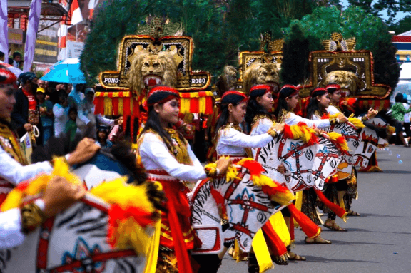
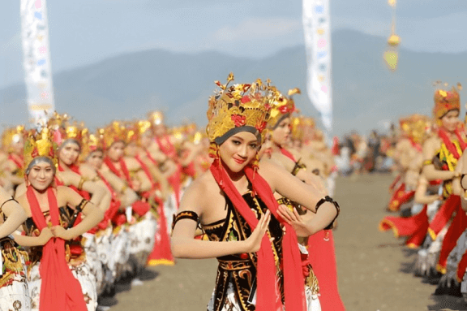
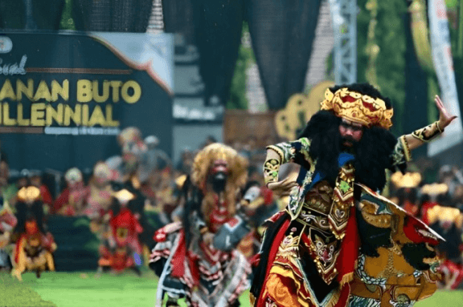
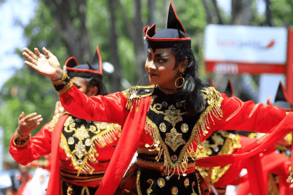

Tari Reog Ponorogo
Tari Reog berasal dari Ponorogo, Jawa Timur. Tarian ini melibatkan penari yang mengenakan topeng besar dan berat, seringkali menggambarkan makhluk mistis atau hewan mitologis
Lihat Lokasi

Tari Gandrung
Tari Gandrung berasal dari Banyuwangi, Jawa Timur. Ini adalah tarian rakyat yang penuh dengan nuansa romantis dan kegembiraan.
Lihat Lokasi

Tari Jaranan Buto
Tarian ini melibatkan penari dan penonton dalam pertunjukan yang menggambarkan pertempuran antara kelompok-kelompok jaranan
Lihat Lokasi

Tari Remo
Tari Remo berasal dari Malang, Jawa Timur. Ini adalah tarian yang menggambarkan semangat kegembiraan dan kehidupan.
Lihat Lokasi